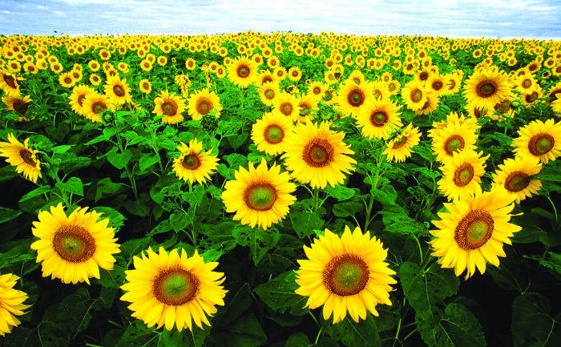

सूर्यफुल विषयी माहिती

br
जमीन
सूर्यफुल लागवडीसाठी पाण्याचा चांगला निचरा होणारी मध्यम ते भारी जमीन निवडावी. आम्लयुक्त आणि पाणथळ जमिनीत हे पीक
चांगले येत नाही.
br
पूर्वमशागत
जमीनीची खोल नांगरट करुन त्यानंतर कुळवाच्या उभ्या आडव्या दोन ते तीन पाळ्या द्याव्यात. शेवटच्या कुळवाच्या
पाळीपूर्वी हेक्टरी २० ते २५ गाड्या चांगले कुजलेले शेणखत घालावे.
br
पेरणी हंगाम
खरीप – जुलै पहिला पंधरवडा, रब्बी – ऑक्टोंबर पहिला पंधरवडा ते नोव्हेंबर पहिला पंधरवडा उन्हाळी – फेब्रुवारी पहिला
पंधरवडा.
br
पेरणीचे अंतर
मध्यम ते खोल जमीन – ४५ X ३० सें.मी., भारी जमीन – ६० X ३० सें.मी. तसेच संकरित वाण आणि जास्त कालावधीच्या वाणाची
लागवड ६० X ३० सें.मी. अंतरावर करावी.
br
पेरणी पध्दत
कोरडवाहू सुर्यफूलाची पेरणी दोन चाड्याच्या पाभरीने करावी म्हणजे बी आणि खत एकाच वेळी पेरता येते. बियाणे ५ सें.मी
पेक्षा जास्त खोल पेरू नये. बागायती पिकाची लागवड सरी वरंब्यावर टोकण पद्घतीने करावी.
br
बियाणे
सुर्यफूलाच्या पेरणीसाठी सुधारित वाणाचे ८-१० किलो बियाणे आणि संकरित वाणाचे ५ ते ६ किलो बियाणे प्रति हेक्टरी
वापरावे.
br
बीजप्रक्रिया
मर रोगाच्या प्रतिबंधासाठी २ ते २.५ ग्रॅम थायरम किंवा ब्रासिकॉल प्रतिकॉल प्रतिकिलो बियाण्यास चोळावे. केवडा रोग
टाळण्यासाठी ६ ग्रॅम अॅप्रॉन ३५ एस.डी.प्रति किलो बियाण्यास चोळावे. तसेच विषाणूजन्य (नॅक्रॉसिस) रोगाच्या
प्रतिबंधासाठी इमिडॅक्लोप्रिड ७० डब्लू. ए.गाऊचा ५ ग्रॅम प्रति किलो बियाण्यास लावावे. त्यानंतर अॅझोटोबॅक्टर हे
जिवाणू खत २५ ग्रॅम प्रति किलो बियाण्यास पेरणीपूर्वी लावावी.
br
आंतरपिक
आंतरपीक पध्दतीत सुर्यफूल अधिक तूर (२:१ किंवा २:२) आणि भूईमूग अधिक सुर्यफूल (६:२ किंवा ३:१) या प्रमाणात ओळीने
पेरणी केल्यास उत्पादनात चांगली वाढ होते.
br
रासायनिक खते
कोरडवाहू विकास प्रति हेक्टरी २.५ टन शेणखत तसेच ५० किलो नत्र, २५ किलो स्फरद आणि २५ किलो पालाश पेरणीच्या वेळेस दोन
चाड्याच्या पाभरीने पेरून द्यावे. बागायती पिकास प्रति हेक्टरी ६० किलो नत्र अधिक ३० किलो स्फूरद अधिक ३० किलो पालाश
द्यावे. यापैकी ३० किलो नत्र व संपूर्ण स्फुरद आणि पालाश पेरणीच्या वेळी द्यावे व उरलेल्या ३० किलो नत्राची मात्रा
पेरणीनंतर एक महिन्याच्या आत द्यावी. गंधकाची कमतरता असलेल्या जमिनीसाठी प्रति हेक्टरी २० किलो गंधक पेरणीच्या वेळी
गांडूळ खतातून द्यावे.
br
आंतरमशागत
पेरणीनंतर १५-२० दिवसांनी दोन रोपातील अंतर ३० सें.मी ठेऊन विरळणी करावी. पेरणीनंतर १५ दिवसांनी एक खुरपणी करावी
तसेच दोन कोळपण्या कराव्यात. पहिली कोळपणी पेरणीनंतर २० दिवसांनी व दुसरी कोळपणी ३५ ते ४० दिवसांनी करावी.
br
पाणी व्यवस्थापन
सुर्यफूलाच्या पिकास संवेदनक्षम अवस्थेत पाणी देणे अत्यंत गरजेचे आहे. सुर्यफूलाच्या संवेदनक्षम अवस्था १) रोप
अवस्था २) फुलकळी अवस्था ३) फुलो-याची अवस्था. ४) दाणे भरण्याची अवस्था व संवेदनशील अवस्थेत पाण्याचा ताण पडू देऊ
नये. फुलकळी अवस्था ते दाणे भरण्याच्या अवस्थेत पाण्याचा ताण पडल्यास दाणे पोकळ राहतात व उत्पादनात घट येते.
br
पीक सरंक्षण
विषाणूजन्य रोग हा रस शोषणा-या फुलकिड्यांमार्फत होतो. त्यांच्या नियंत्रणासाठी इमिडोक्लोप्रिड २०० एस.एल. २ मिली/१०
लीटर पाणी या प्रमाणात पेरणीनंतर १५ दिवसांच्या अंतराने तीन वेळा फवारण्या कराव्यात. मावा व तुडतुडे यांच्या
नियंत्रणासाठी डायमिथोएट ३० प्रवाही ०.०३ टक्के फवारावे. घाटे अळीच्या नियंत्रणासाठी क्विनॉलफॉस २५ टक्के प्रवाही
१००० मिली ५०० लिटर पाण्यात मिसळून प्रति हेक्टरी वापरावे. केवळ अळीच्या नियंत्रणासाठी अळ्यांचे पुंजके वेचून रॉकेल
मिश्रीत पाण्यात टाकून त्यांचा नाश करावा.
br
जैविक किड नियंत्रण
सुर्यफूलावरील पाने खाणारी अळी, केसाळ अळी, घाटे अळी यांच्या नियंत्रणासाठी एच.एन.पी.व्ही.या विषाणूची फवारणी करावी.
br
काढणी
सुर्यफूलाची पाने, देठ व फूलाची मागील बाजू पिवळी झाल्यानंतर पिकाची कापणी करावी. कणसे चांगली वाळवून नंतर मळणी
करावी.
br
उत्पादन
कोरडवाहू पिकापासून प्रति हेक्टरी ८ ते १० क्विंटल, संकरित वाणापासून १२ ते १५ क्विंटल आणि बागायती/संकरित वाणापासून
प्रति हेक्टरी १५ ते २० क्विंटल उत्पादन मिळते.
br
विशेष बाब
पीक फुलो-यात असताना सकाळी ७ ते ११ या वेळेत हाताला तलम कापड गुंडाळून फुलाच्या तबकावरुन हळूवार हात फिरवावा म्हणजे
कृत्रिम परागीभवन होऊन दाणे भरण्याचे प्रमाण वाढते. सुर्यफूलाचे फुल उमलण्याच्या अवस्थेत व त्यानंतर आठ दिवसांनी २
ग्रॅम बोरॅक्स प्रति लिटर पाणी या प्रमाणात मिसळून फवारणी करावी.
त्यामुळे दाणे भरण्याचे प्रमाण व दाण्याचे वजन
वाढते. परागीभवन होण्यासाठी प्रति हेक्टरी ४-५ मधमांश्याच्या पेट्या ठेवावेत. सुर्यफूल पिकाची फेरपालट करावी.
सुर्यफूलाची मुळे जमिनीत खोलवर जातात. दरवर्षी त्याच जमिनीत वारंवार हे पीक घेतल्यास जमिनीचा पोत बिघडून उत्पादन
क्षमता कमी होते.
तसेच रोग व किडीचा प्रादुर्भाव वाढतो. त्यासाठी कमीत कमी तीन वर्षे तरी त्याच जमिनीत सुर्यफुलाचे
पीक घेऊ नये. तसेच कडधान्य सुर्यफूल किंवा तृणधान्य सुर्यफूल या प्रमाणे पिकाची फेरपालट करावी. पीक फुलो-यात असताना
किटकनाशकाची फवारणी करु नये. अगदीच आवश्यकता असेल तर किटकनाशकाची फवारणी करावी.